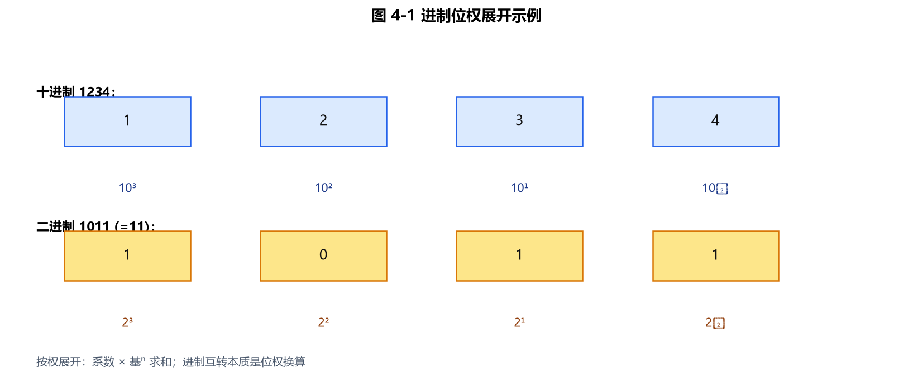
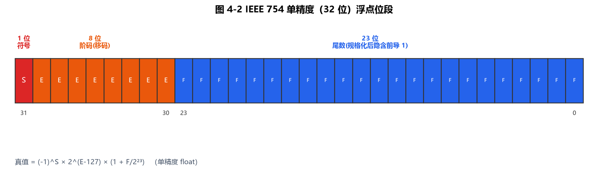
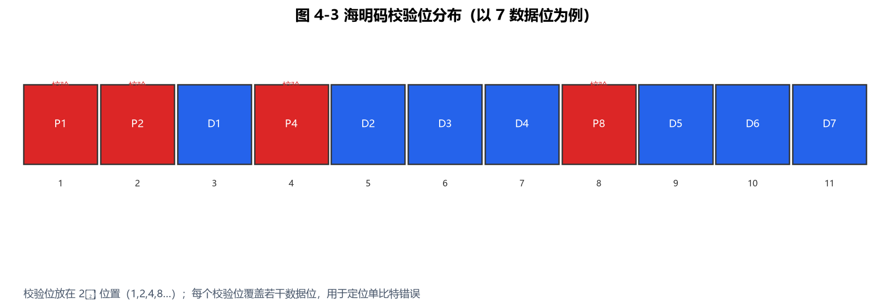

第4章 数制转换和信息编码
本章是 CSP-S 初赛与复赛都会涉及的基础理论。初赛常考进制互化计算、原/反/补码、IEEE 754 浮点表示、校验码；复赛虽然不直接考，但位运算（第5章）、哈希、状态压缩都建立在"数据如何用二进制表示"之上。本章把每个知识点都配上可编译的 C++17 示例代码，建议亲手跑一遍加深理解。
4.1 进制与进制转换
计算机底层使用二进制（0/1），但为了方便书写与阅读，人常用八进制、十六进制。任意 R 进制数都按"位权"展开：
数值 = Σ（每位数字 × Rᵉ），其中 e 是该位的权指数（从右往左第 0 位起）。
| 进制 | 基 R | 合法数字 | 常见用途 |
|---|---|---|---|
| 二进制 B | 2 | 0, 1 | 机器内部 |
| 八进制 O | 8 | 0~7 | 早期 Unix 权限 |
| 十进制 D | 10 | 0~9 | 人类习惯 |
| 十六进制 H | 16 | 0 | 内存地址、颜色值 |

图 4-1：任意 R 进制都可按"位权"展开为系数 × 基ⁱ 的累加和，这是进制互转的核心。
4.1.1 十进制整数 → 任意 R 进制（除基取余法）
把十进制数不断除以 R，记录每次的余数，直到商为 0，最后逆序读取余数即得结果。这是洛谷 P1143 进制转换 的核心思想。
#include <iostream>
#include <string>
#include <algorithm>
using namespace std;
// 十进制 n(>=0) 转 R 进制字符串，2 <= R <= 36
string decToBase(int n, int R) {
if (n == 0) return "0";
string ans;
while (n > 0) {
int r = n % R; // 取余
char c = (r < 10) ? (char)('0' + r) : (char)('A' + r - 10);
ans.push_back(c);
n /= R; // 除基
}
reverse(ans.begin(), ans.end()); // 逆序
return ans;
}
int main() {
cout << "25 -> 2 进制: " << decToBase(25, 2) << "\n"; // 11001
cout << "255 -> 16 进制: " << decToBase(255, 16) << "\n"; // FF
cout << "100 -> 8 进制: " << decToBase(100, 8) << "\n"; // 144
return 0;
}
真题延伸：洛谷 P1604 B进制星球 要求读入两个 B 进制数做加法再输出 B 进制结果（2 ≤ B ≤ 36）。做法是先"按权展开"分别转成十进制相加，再用上面的 decToBase 转回 B 进制。
4.1.2 任意 R 进制 → 十进制（按权展开法）
每位数字乘以 R 的"位权"再求和。注意十六进制里的 AF 要先换算成 1015。
#include <iostream>
#include <string>
using namespace std;
// 把 R 进制字符串 s 转为十进制整数（假设不溢出）
long long baseToDec(const string& s, int R) {
long long val = 0;
for (char c : s) {
int d = (c >= '0' && c <= '9') ? (c - '0') : (c - 'A' + 10);
val = val * R + d; // 累计：上一位 × 基 + 当前位
}
return val;
}
int main() {
cout << "二进制 11001 -> 十进制: " << baseToDec("11001", 2) << "\n"; // 25
cout << "十六进制 FF -> 十进制: " << baseToDec("FF", 16) << "\n"; // 255
cout << "八进制 144 -> 十进制: " << baseToDec("144", 8) << "\n"; // 100
return 0;
}
竞赛提示：复赛里真正需要手动进制转换的场景很少，但大整数/高精度题中"乘基累加"（
val = val * R + d）和"除基取余"（val % R）这两段代码模式会反复出现，务必背熟。
4.1.3 含小数部分的转换（乘基取整法）
整数部分的转换用"除基取余"，小数部分用"乘基取整"：不断把小数部分 × R，取整数部分作为下一位，再用新的小数部分继续，直到小数部分为 0 或达到精度。
示例：0.625(十进制) -> 二进制
0.625 × 2 = 1.25 -> 取整 1，剩 0.25
0.25 × 2 = 0.50 -> 取整 0，剩 0.50
0.50 × 2 = 1.00 -> 取整 1，剩 0.00（结束）
从前往后读：0.101(二进制) = 0.625(十进制) ✓
#include <iostream>
#include <string>
using namespace std;
// 十进制小数 frac(∈[0,1)) 转 R 进制，最多 maxBits 位
string fracToBase(double frac, int R, int maxBits = 20) {
string ans = ".";
for (int i = 0; i < maxBits && frac > 1e-12; ++i) {
frac *= R; // 乘基
int d = (int)frac; // 取整
ans.push_back(d < 10 ? (char)('0' + d) : (char)('A' + d - 10));
frac -= d; // 去整留小
}
return ans;
}
int main() {
cout << "0.625 -> 二进制: " << fracToBase(0.625, 2) << "\n"; // .101
return 0;
}
易错点：并不是所有十进制小数都能有限表示成二进制（如 0.1 在二进制里是无限循环小数 0.000110011…），这正是
0.1 + 0.2 != 0.3浮点误差的根源（见 4.3）。
4.1.4 二、八、十六进制的快捷互转
每 3 位二进制对应 1 位八进制，每 4 位二进制对应 1 位十六进制，从小数点向两侧分组（不足补 0）：
二进制 1101 0110 -> 分组 1101 0110 -> 十六进制 D6
二进制 001 101 110 -> 分组 001 101 110 -> 八进制 156
4.2 BCD 码、ASCII 与汉字编码
4.2.1 BCD 码（8421 码）
用 4 位二进制表示 1 位十进制数（0~9），权值分别为 8、4、2、1。例如十进制 25 的 8421-BCD 是 0010 0101。优点是人机转换快，缺点是浪费位（4 位本可表示 16 种，只用 10 种）。
4.2.2 ASCII 码
美国信息交换标准码，用 7 位表示 128 个字符（最高位常作奇偶校验位）。必须记住的几组关键值：
| 字符类 | 起始 | 规律 |
|---|---|---|
数字 '0'~'9' | 48 (0x30) | '0'+k 得到第 k 个数字 |
大写 'A'~'Z' | 65 (0x41) | 'A'+k |
小写 'a'~'z' | 97 (0x61) | 'a'+k |
#include <iostream>
using namespace std;
int main() {
char c = 'A';
cout << "'A' 的 ASCII: " << (int)c << "\n"; // 65
cout << "'a' 的 ASCII: " << (int)'a' << "\n"; // 97
cout << "'0' 的 ASCII: " << (int)'0' << "\n"; // 48
// 大小写互转：差 32；用位运算 c ^ 32 也可（仅限 A~Z / a~z）
cout << "小写 'b': " << (char)('B' + 32) << "\n"; // b
// 数字字符转整数
cout << "字符 '7' -> 整数: " << ('7' - '0') << "\n"; // 7
return 0;
}
4.2.3 Unicode 与 UTF-8
ASCII 只覆盖英文，Unicode 为全球字符统一编号（码点）。UTF-8 是变长编码：英文仍占 1 字节（兼容 ASCII），中文通常占 3 字节。竞赛中处理中文字符串要小心"一个汉字占多个 char"，C++ 里更常用 string 按字节遍历时需避免把一个汉字拆开。
4.2.4 汉字编码（GB2312 / GBK）
国标码用两个字节表示一个汉字。常见三段式关系（初赛常考填空）：
- 区位码：用"区号(1
94) + 位号(194)"定位汉字。 - 国标码 = 区位码（十六进制表示） + 0x2020。
- 机内码 = 国标码 + 0x8080（即每个字节最高位置 1，区别于 ASCII）。
记忆口诀：区位码 + 0x2020 = 国标码；国标码 + 0x8080 = 机内码。
4.3 浮点数表示（IEEE 754 标准）
实数（小数）在计算机里按 IEEE 754 标准用"符号 + 阶码 + 尾数"三段存储，而不是简单地把整数位和小数位分开。
4.3.1 单精度 float（32 位）布局
| 字段 | 位数 | 含义 |
|---|---|---|
| S 符号位 | 1 | 0 正 / 1 负 |
| E 阶码 | 8 | 实际指数 + 偏移 127（即 E = e + 127） |
| M 尾数 | 23 | 规格化后隐藏整数 1，只存小数部分 |

图 4-2：IEEE 754 单精度 float 共 32 位：1 位符号 + 8 位阶码（移码表示）+ 23 位尾数。
真值公式（规格化数）：值 = (-1)ˢ × 1.M × 2⁽ᴱ⁻¹²⁷⁾
双精度 double 为 1 + 11（偏移 1023）+ 52。
#include <iostream>
#include <cstring>
using namespace std;
// 以 32 位二进制形式打印 float 的 IEEE754 布局
void printFloatBits(float f) {
unsigned int u;
memcpy(&u, &f, sizeof(u)); // 把 float 的位原样拷到 unsigned int
for (int i = 31; i >= 0; --i)
cout << ((u >> i) & 1);
cout << "\n";
}
int main() {
float one = 1.0f;
float small = 0.1f;
cout << "1.0 的 32 位: "; printFloatBits(one);
// 0 1 1111111 00000000000000000000000 (S=0, E=127, M=0 -> 1.0*2^0 = 1)
cout << "0.1 的 32 位: "; printFloatBits(small);
// 注意 0.1 无法被二进制精确表示，尾数部分是"无限循环"的近似
return 0;
}
经典坑：
0.1 + 0.2 == 0.3在 C++ 里为false，因为 0.1、0.2 在二进制下都是无限循环小数，存储时被截断。复赛中比较两个浮点数应写fabs(a - b) < 1e-9而不是直接==。
4.3.2 表示范围与特殊值
- float 约范围：±1.18×10⁻³⁸ ~ ±3.4×10³⁸；double 约 ±2.23×10⁻³⁰⁸ ~ ±1.8×10³⁰⁸。
- 阶码全 0、尾数非 0：非规格化数（接近 0）。
- 阶码全 1、尾数 0：±∞（溢出）。
- 阶码全 1、尾数非 0：NaN（不是数，如 0.0/0.0）。
4.4 数据校验码
数据传输/存储可能出错，校验码用冗余位检测（甚至纠正）错误。初赛重点考查奇偶校验、海明码、CRC。
4.4.1 奇偶校验（Parity）
在数据中附加 1 位，使"1 的个数"为奇数（奇校验）或偶数（偶校验）。只能检错（且只能检出奇数位错），不能纠错。
#include <iostream>
using namespace std;
// 计算偶校验位：使所有位(含校验位)中 1 的个数为偶数
int evenParityBit(int data) {
int cnt = 0;
while (data) { cnt += data & 1; data >>= 1; }
return (cnt % 2 == 0) ? 0 : 1;
}
int main() {
int d = 0b1011001; // 数据，含 4 个 1（偶数个）
int p = evenParityBit(d);
cout << "数据 1011001 的偶校验位: " << p << "\n"; // 0（已为偶数个1，不补）
// 验证：改成 0b1011000（3 个 1，奇数）则校验位补 1
int d2 = 0b1011000;
cout << "数据 1011000 的偶校验位: " << evenParityBit(d2) << "\n"; // 1
return 0;
}
说明：上面
0b1011001实际含 4 个 1（偶数），所以偶校验位为 0；第二个例子含 3 个 1（奇数），校验位补 1 使总数变偶数。代码逻辑即"奇则补 1"。
4.4.2 海明码（Hamming Code）
可检测并纠正 1 位错误的编码。校验位放在第 2ᵏ 位（1, 2, 4, 8…），每个校验位负责"位置编号二进制中该位为 1"的所有数据位。以 4 位数据为例：
- 数据位放在位置 3、5、6、7，校验位放在 1、2、4。
- p1 监督位置 1,3,5,7；p2 监督 2,3,6,7；p3 监督 4,5,6,7。

图 4-3：海明码把校验位 P 放在 2ᵏ 位置（1,2,4,8…），每个 P 覆盖若干数据位，可定位并纠正 1 位错。
#include <iostream>
using namespace std;
// 对 4 位数据 d[0..3]（d0,d1,d2,d3）计算海明码（7 位），位置 1/2/4 为校验位
void hammingEncode(int d0, int d1, int d2, int d3) {
int p1 = d0 ^ d1 ^ d3; // 位置 3(d0),5(d1),7(d3)
int p2 = d0 ^ d2 ^ d3; // 位置 3(d0),6(d2),7(d3)
int p3 = d1 ^ d2 ^ d3; // 位置 5(d1),6(d2),7(d3)
// 编码后位置 1~7: pos1=p1, pos2=p2, pos3=d0, pos4=p3, pos5=d1, pos6=d2, pos7=d3
// 以下按"位置 7 -> 位置 1"(高位到低位)打印
cout << "海明码(位置7..1, 高位到低位): "
<< d3 << d2 << d1 << p3 << d0 << p2 << p1 << "\n";
}
int main() {
hammingEncode(1, 0, 1, 1); // 数据 1011 -> 输出 1100110 (p1=0,p2=1,p3=0)
return 0;
}
初赛考法：给你编码后的码字，指出哪一位出错（用三个校验位异或得到的"综合征"定位），再取反即可纠正。
4.4.3 CRC 循环冗余校验
把数据当成多项式系数，除以生成多项式 G(x)，得到的余数作为校验字段附在后面。接收方用同样的 G(x) 除，余数为 0 则无错（大概率）。下面用 CRC-8（生成多项式 0x07 = x⁸+x²+x+1）演示核心的"模 2 除法"（异或，不借位）。
#include <iostream>
#include <vector>
using namespace std;
// CRC-8，多项式 0x07，初始 0（教学简化版，演示模2除法思路）
unsigned char crc8(const unsigned char* data, int len) {
unsigned char crc = 0;
for (int i = 0; i < len; ++i) {
crc ^= data[i];
for (int b = 0; b < 8; ++b) {
if (crc & 0x80) crc = (unsigned char)((crc << 1) ^ 0x07);
else crc = (unsigned char)(crc << 1);
}
}
return crc;
}
int main() {
unsigned char buf[] = {'H', 'i'}; // 任意字节流
unsigned char c = crc8(buf, 2);
cout << "CRC-8 校验值: " << (int)c << "\n"; // 具体值由输入决定
return 0;
}
实战：网络、磁盘、ZIP 等都用 CRC（如 CRC-16、CRC-32）。复赛里你一般不会手写 CRC，但理解"模 2 异或除法"对理解哈希与位运算有帮助。
4.5 声音与图像的数字化
4.5.1 声音数字化（采样 → 量化 → 编码）
- 采样：按固定频率取瞬时振幅。奈奎斯特采样定理：采样频率必须 > 2 倍信号最高频率，才能无失真还原。
- 量化：把连续振幅近似到有限个离散等级（如 16 bit 精度）。
- 编码：存成 PCM 等格式（WAV 即为无压缩 PCM）。
#include <iostream>
#include <vector>
#include <cmath>
using namespace std;
// 演示量化：把连续振幅值 round 到最近的整数等级（4 bit：0~15）
int quantize(double amp) {
int levels = 16; // 4 bit 量化
int q = (int)round(amp * (levels - 1)); // 映射到 0~15
if (q < 0) q = 0;
if (q > levels - 1) q = levels - 1;
return q;
}
int main() {
double samples[] = {0.0, 0.33, 0.5, 0.99, -0.5};
for (double s : samples)
cout << "振幅 " << s << " -> 量化等级 " << quantize(s) << "\n";
// 奈奎斯特：若最高频率 20kHz，则采样率需 > 40kHz（CD 用 44.1kHz）
return 0;
}
4.5.2 图像数字化与压缩
- 分辨率：像素点数（如 1920×1080）。
- 色彩深度：每个像素占多少位（RGB 真彩 24 位 = 每通道 8 位）。
- 压缩：无损（PNG、ZIP，可完全还原）vs 有损（JPEG、MP3，丢弃人眼/人耳不敏感信息以大幅减小体积）。
4.6 本章小结
- 进制互化两套代码必须背熟：除基取余（十→R）与按权展开累加（R→十），小数用"乘基取整"。
- 编码：ASCII 关键值（'0'=48、'A'=65、'a'=97）、汉字"区位码→国标码→机内码"三段 +0x2020、+0x8080。
- 浮点：IEEE 754 三段式（S/E/M），记住
0.1+0.2≠0.3的误差来源。 - 校验：奇偶校验（只检错）、海明码（检 1 纠 1）、CRC（模 2 异或除法）。
- 数字化：奈奎斯特采样定理（采样率 > 2 倍最高频）。
随堂检测（CSP-S 风格）
-
（单选）十进制数 25 转换成二进制是（ ）
- A. 11001
- B. 10011
- C. 11010
- D. 10101
参考答案
A. 11001。
解析（考点）：除基取余——25÷2=12 余 1，12÷2=6 余 0，6÷2=3 余 0，3÷2=1 余 1，1÷2=0 余 1，逆序读余数得 11001。
-
（单选）十六进制数 FF 对应的十进制值是（ ）
- A. 128
- B. 255
- C. 256
- D. 240
参考答案
B. 255。
解析（考点）：F=15，按权展开 = 15×16¹ + 15×16⁰ = 240 + 15 = 255（即 2⁸−1）。
-
（单选）字符
'A'的 ASCII 码值是（ ）- A. 48
- B. 65
- C. 97
- D. 32
参考答案
B. 65。
解析（考点）：
'0'=48、'A'=65、'a'=97，是三组必须记忆的基准值；'A'+32='a'。 -
（单选）根据 IEEE 754 单精度标准，表达式
0.1 + 0.2 == 0.3的结果通常是（ ）- A. true
- B. false
- C. 编译错误
- D. 不确定
参考答案
B. false。
解析（考点）：0.1、0.2 在二进制下是无限循环小数，float 存储时被截断近似，相加结果略偏，故不能用
==直接比较浮点数，应写fabs(a-b) < 1e-9。 -
（多选）关于海明码，下列说法正确的有（ ）
- A. 可以检测 1 位错误
- B. 可以纠正 1 位错误
- C. 校验位放在第 2ᵏ 位（1、2、4…）
- D. 能纠正任意多位错误
参考答案
A、B、C。
解析（考点）：标准海明码可"检 1 纠 1"（检 2 位、纠 1 位），校验位位于 1、2、4、8…；它无法纠正多位错误，D 错。
-
（单选）对最高频率为 20 kHz 的音频信号进行无失真数字化，采样频率至少应为（ ）
- A. 20 kHz
- B. 大于 40 kHz
- C. 等于 40 kHz
- D. 10 kHz
参考答案
B. 大于 40 kHz。
解析（考点）：奈奎斯特采样定理要求采样频率 严格大于 2 倍最高频率（>40 kHz），等于 40 kHz 不够（CD 实际用 44.1 kHz）。